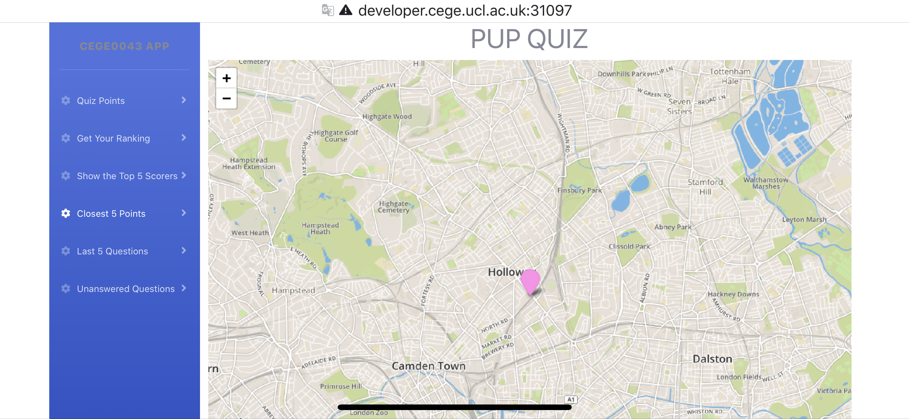
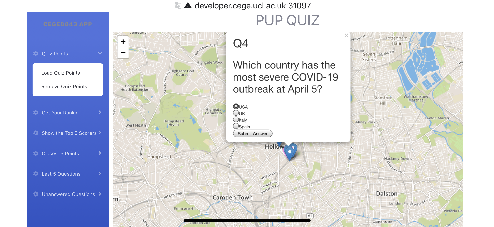
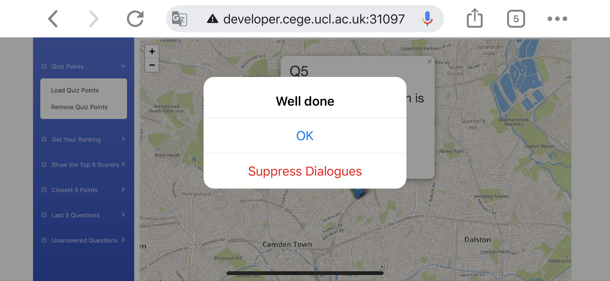
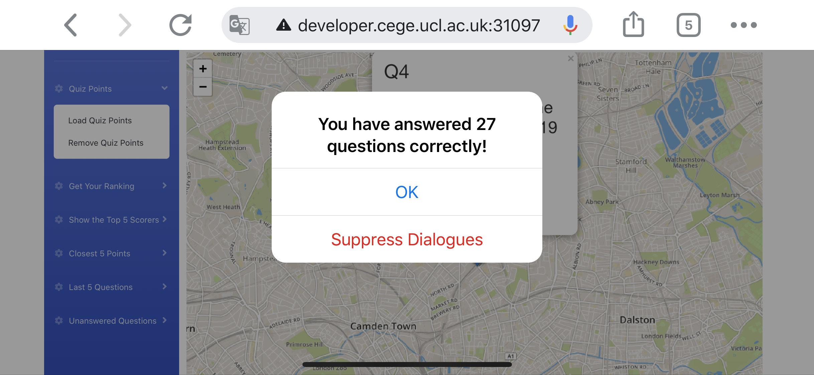

Firstly, confirm that you have connected to UCL Wi-Fi and then open the browser and enter the following link: https://developer.cege.ucl.ac.uk:31097/bootStrap.html. Then you will see the following interface on your phone screen (Figure 1)

Figure 1: All functions are displayed on the left in the form of a menu, the pink point in the middle of the map is the user's current location
After clicking the Quiz Points sub-menu Load Quiz Points, all quiz points will be displayed on the map with blue points. And the question form will pop up automatically when the position of the user is close to quiz points. User can select their answer by clicking the radio buttons (Figure 2)
After user clicking the 'Submit Answer' button, the app will tell the user if their answer is correct or not (Figure 3) and how many answers they have answered correctly (Figure 4)

Figure 2: The automatically pop up question form

Figure 3: Alert window to tell the user if their answer is correct or not

Figure 4: Alert window to tell the user how many questions they have answered correctly
After the user submit their answer, the pop-up form will close and the colour of question point will change based on if their answer is correct (Figure 5).
Figure 5: Answer correct (Green); Answer incorrect (Red); Unanswered questions (Blue)